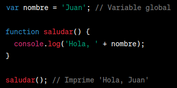
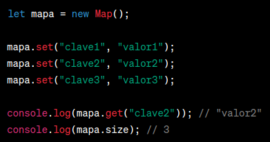

¿Que es JavaScript?
JavaScript es un lenguaje fundamental en el desarrollo web moderno, ya que brinda la capacidad de crear experiencias interactivas y dinámicas en los navegadores web.
Variable Declarations
Var
Es la forma más antigua de declarar variables en JavaScript. Puede tener alcance global o de función, lo que significa que la variable puede ser accedida desde cualquier parte del código dentro de la función o incluso desde fuera de ella si es global.
Let
Fue introducido en ECMAScript 6 y permite declarar variables con alcance de bloque. Esto significa que la variable solo es accesible dentro del bloque donde se declaró.

Const
También introducido en ECMAScript 6, se utiliza para declarar variables cuyo valor no cambiará a lo largo del programa. Al igual que let, tiene alcance de bloque. Una vez asignado, el valor de una constante no puede ser reasignado.
Hoisting
El hoisting es un comportamiento en JavaScript donde las declaraciones de variables y funciones se mueven automáticamente al inicio del ámbito en el que se encuentran, antes de que se ejecute cualquier código. Esto significa que puedes utilizar una variable o función antes de declararla explícitamente en tu código.
Hoisting de variables
En este caso, la variable x se declara en la primera línea, pero su valor no se ha asignado todavía. Al intentar imprimir su valor, obtendremos undefined. Esto se debe a que la declaración de la variable se ha movido al inicio del ámbito, pero su asignación ocurre en la línea siguiente.
Hoisting de funciones
Aquí, la función sayHello se declara después de su invocación, pero aún así funciona correctamente. Esto se debe a que la declaración de la función se mueve al inicio del ámbito antes de que se ejecute el código.
Variable Naming Rules
- Los nombres de variables pueden contener letras (mayúsculas o minúsculas), dígitos y el símbolo de subrayado (_).Ejemplo:
nombre, edad, numero_de_cuenta. - Los nombres de variables deben comenzar con una letra o el símbolo de subrayado (_). No pueden comenzar con un dígito.Ejemplo:
_variable, nombre, total - JavaScript distingue entre mayúsculas y minúsculas, por lo que
nombreyNombreson consideradas como variables diferentes. - Evita utilizar palabras reservadas de JavaScript como nombres de variables, ya que estas palabras tienen un significado especial en el lenguaje y no pueden ser utilizadas para otros propósitos.Ejemplo:
var, if, else, function - Se recomienda utilizar nombres descriptivos y significativos para las variables, de modo que puedan entenderse fácilmente su propósito y contenido.Ejemplo:
nombreCompleto, cantidadProductos, precioTotal - Es una buena práctica utilizar el estilo de camel case para nombrar variables compuestas por varias palabras. En este estilo, la primera palabra comienza en minúscula y las siguientes palabras comienzan con mayúscula.Ejemplo:
nombreCompleto, cantidadProductos, precioTotal
Variable Scopes
El alcance de las variables en JavaScript se refiere a la accesibilidad y visibilidad de una variable dentro de un determinado contexto. Existen dos tipos de alcance de variables en JavaScript: alcance global y alcance local.
Alcance Global
Las variables declaradas fuera de cualquier función tienen un alcance global, lo que significa que pueden ser accedidas y modificadas desde cualquier parte del código, tanto dentro de funciones como fuera de ellas.
Alcance Local
Las variables declaradas dentro de una función tienen un alcance local, lo que significa que solo pueden ser accedidas y utilizadas dentro de la función en la que se declararon. Estas variables no son visibles fuera de la función.
Block scope
Las variables declaradas con let y const tienen un ámbito de bloque. Esto significa que solo están disponibles dentro del bloque en el que se declaran, como una declaración if, un bucle for o una función.
Function scope
Las variables declaradas con var tienen un ámbito de función. Esto significa que están disponibles dentro de la función en la que se declaran, incluyendo cualquier bloque interno.
Global scope
Las variables declaradas fuera de cualquier función o bloque tienen un ámbito global. Esto significa que están disponibles en todo el código, incluyendo todas las funciones y bloques.
Data Types
Primitive Types
- Número (Number): Representa valores numéricos, ya sean enteros o de punto flotante. Se pueden realizar operaciones matemáticas con estos valores.
- Cadena de texto (String): Representa una secuencia de caracteres, como texto. Las cadenas de texto se encierran entre comillas simples ('') o comillas dobles ("").
- Booleano (Boolean): Representa un valor de verdad, que puede ser verdadero (true) o falso (false). Se utiliza para realizar comparaciones y controlar el flujo del programa.
- Nulo (Null): Representa la ausencia intencional de cualquier valor o objeto. Indica que una variable no tiene ningún valor asignado.
- Indefinido (Undefined): Representa una variable que ha sido declarada pero aún no tiene un valor asignado. También se obtiene cuando se accede a una variable que no existe.
- Símbolo (Symbol): Introducido en ECMAScript 2015, representa un valor único e inmutable que se puede utilizar como identificador de propiedades de objetos.
Object
Un objeto se define utilizando llaves ({}) y consiste en un conjunto de pares clave-valor, donde la clave es una cadena de texto que actúa como el identificador de la propiedad, y el valor puede ser cualquier tipo de dato válido en JavaScript, incluyendo otros objetos.
En el ejemplo anterior, se crea un objeto llamado persona con varias propiedades, como nombre, edad y esEstudiante. También se define un método saludar, que muestra un mensaje por consola utilizando la propiedad nombre del objeto.
Built-in Objects
- Object: Proporciona funcionalidades para crear y manipular objetos.
- Array: Ofrece funcionalidades para trabajar con arreglos de elementos.
- String: Permite manipular y trabajar con cadenas de texto.
- Math: Proporciona funciones matemáticas y constantes.
- Date: Permite trabajar con fechas y horas.
Object Prototype
En este ejemplo, el prototipo del constructor Persona se define mediante la propiedad prototype. Todos los objetos creados con new Persona() heredan automáticamente las propiedades y métodos de ese prototipo.El uso de prototipos es esencial en JavaScript para lograr la herencia y la reutilización de código de manera eficiente. Permite agregar métodos y propiedades comunes a un conjunto de objetos sin tener que duplicar el código en cada instancia individual.
Prototypal Inheritance
En este ejemplo, el objeto animal actúa como el prototipo del objeto perro. Cuando intentas acceder a la propiedad tipo o al método describir() en perro, JavaScript busca en su prototipo (animal) y encuentra la propiedad y el método.
Typeof Operator
El operador typeof se utiliza en JavaScript para determinar el tipo de dato de una expresión.
Type Casting
Type Conversion vs Coercion
La conversión de tipos se refiere a la transformación automática de un tipo de dato a otro, mientras que la coerción se refiere a la transformación implícita de un tipo de dato a otro en expresiones.
Explicit Type Casting
El explicit type casting se refiere a la conversión de un tipo de dato a otro de forma explícita, utilizando funciones o operadores específicos.
Implicit Type Casting
El implicit type casting se refiere a la conversión automática de un tipo de dato a otro sin necesidad de una instrucción explícita. Esto ocurre cuando se realizan operaciones entre diferentes tipos de datos.
Data Structures
Indexed Collections
Las Indexed Collections son estructuras de datos que permiten almacenar múltiples elementos en una secuencia ordenada, donde cada elemento se identifica mediante un índice. En JavaScript, las Indexed Collections incluyen Arrays y Typed Arrays.
Typed Arrays
Los Typed Arrays son arrays de datos numéricos que tienen un tipo de dato específico y un tamaño fijo. Los Typed Arrays proporcionan un mejor rendimiento y uso eficiente de memoria al trabajar con grandes conjuntos de datos numéricos en comparación con los Arrays normales.
Arrays
Los Arrays son estructuras de datos en JavaScript que permiten almacenar múltiples elementos en una sola variable. Pueden contener cualquier tipo de dato y su tamaño puede cambiar dinámicamente.
Keyed Collections
Map
El Map es una estructura de datos en la que se pueden almacenar pares clave-valor. Las claves y los valores pueden ser de cualquier tipo de dato y están asociados de forma única. A diferencia de los objetos normales, los Mapas mantienen el orden de inserción de los elementos.
WeakMap
El WeakMap es similar al Map, pero solo acepta objetos como claves y tiene una característica especial: no previene la eliminación de claves y valores si no hay más referencias a ellos en el programa. Esto puede ser útil en ciertos escenarios donde se desea evitar fugas de memoria.
Set

El Set es una colección de valores únicos, es decir, no permite duplicados. Puede contener cualquier tipo de dato y mantiene el orden de inserción de los elementos.
WeakSet
El WeakSet es similar al Set, pero solo acepta objetos como elementos y tiene la misma característica especial que el WeakMap: no previene la eliminación de elementos si no hay más referencias a ellos en el programa.
Structured Data
Los datos estructurados se refieren a la organización y formato de los datos de manera que sigan una estructura predefinida. Esto permite que los datos sean más legibles y fáciles de procesar por las aplicaciones. Los datos estructurados se utilizan comúnmente para representar información de manera organizada, como bases de datos, hojas de cálculo o formatos específicos como XML o JSON.
JSON
JSON es un formato de intercambio de datos basado en texto que se utiliza ampliamente en aplicaciones web y servicios web. Es un formato ligero y fácil de leer y escribir tanto para humanos como para máquinas. JSON se utiliza para representar datos estructurados en forma de objetos y arreglos en JavaScript y otros lenguajes de programación.
Equality Comparisons
Value Comparison Operators
==
El operador == compara dos valores permitiendo la conversión de tipos de datos. En otras palabras, intenta realizar una comparación igualando los valores después de aplicar conversiones implícitas si es necesario. Por ejemplo, "5" == 5 devuelve true ya que se realiza una conversión implícita de la cadena a un número antes de la comparación.
===
El operador === compara dos valores sin realizar ninguna conversión de tipos. Compara tanto el valor como el tipo de dato de manera estricta. Por ejemplo, "5" === 5 devuelve false porque la cadena y el número tienen tipos de datos diferentes.
Object.is
El método Object.is compara dos valores de manera estricta, similar al operador ===. Sin embargo, tiene algunas diferencias sutiles en la comparación de valores especiales como NaN y -0 (cero negativo). Por ejemplo, Object.is(NaN, NaN) devuelve true y Object.is(-0, 0) devuelve false.
Equality Algorithms
Los algoritmos de igualdad en JavaScript determinan cómo se comparan y evalúan los valores en diferentes contextos. A continuación, te explicaré brevemente los conceptos de isLooselyEqual, isStrictlyEqual, SameValueZero y SameValue:
isLooselyEqual
Es un algoritmo utilizado en la especificación de ECMAScript para comparar valores en contextos de igualdad abstracta, como el operador ==. Este algoritmo realiza conversiones de tipo antes de realizar la comparación. Por ejemplo, "5" == 5 devuelve true, ya que se convierte la cadena en un número antes de la comparación.
isStrictlyEqual
Es un algoritmo utilizado en la especificación de ECMAScript para comparar valores en contextos de igualdad estricta, como el operador ===. Este algoritmo no realiza conversiones de tipo y compara tanto el valor como el tipo de manera estricta. Por ejemplo, "5" === 5 devuelve false, ya que la cadena y el número tienen tipos de datos diferentes.
SameValueZero
Es un algoritmo utilizado en la especificación de ECMAScript para comparar valores numéricos. Este algoritmo se utiliza, por ejemplo, en los métodos Array.prototype.indexOf y Array.prototype.includes. Considera que NaN es igual a NaN y -0 (cero negativo) es igual a 0.
SameValue
Es un algoritmo utilizado en la especificación de ECMAScript para comparar valores en contextos más generales. Este algoritmo es similar a SameValueZero, pero considera NaN como diferente a NaN y -0 (cero negativo) como diferente a 0.
Loops and Iterations
for
El bucle for se utiliza para iterar sobre una secuencia de elementos un número específico de veces.
do...while
El bucle do...while se ejecuta al menos una vez y luego se repite siempre que se cumpla una condición específica.
while
El bucle while se ejecuta siempre que se cumpla una condición específica.
for...in
El bucle for...in se utiliza para iterar sobre las propiedades de un objeto.
for...of
El bucle for...of se utiliza para iterar sobre elementos iterables, como arrays o cadenas de texto.
break y continue

La declaración break se utiliza para salir de un bucle antes de que se complete, mientras que la declaración continue se utiliza para saltar a la siguiente iteración del bucle.
Labeled
Las etiquetas se utilizan para identificar un bucle y permiten controlar el flujo de ejecución utilizando la declaración break o continue junto con la etiqueta.
Control Flow
if...else
La declaración if...else se utiliza para ejecutar un bloque de código si se cumple una condición, y otro bloque de código si la condición no se cumple.
ternary operator
El operador ternario es una forma concisa de escribir una declaración if...else. Se utiliza para asignar un valor o ejecutar un bloque de código basado en una condición.
switch
La declaración switch se utiliza para ejecutar diferentes bloques de código según el valor de una expresión.
throw
La declaración throw se utiliza para lanzar una excepción. Puedes lanzar cualquier valor como excepción, pero generalmente se utiliza un objeto Error para representar una excepción.
try / catch / finally
El bloque try se utiliza para envolver el código que puede generar una excepción. El bloque catch se utiliza para capturar la excepción y manejarla. El bloque finally es opcional y se ejecuta siempre, independientemente de si se produce una excepción o no.
Error
El objeto Error se utiliza para representar una excepción. Puedes personalizar el mensaje de la excepción y también acceder a la pila de llamadas.